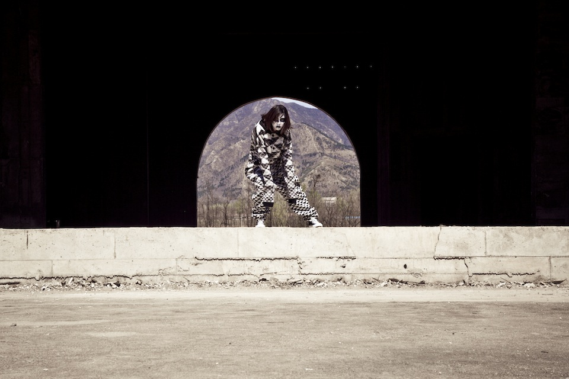
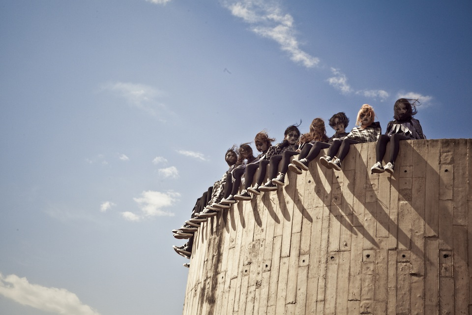
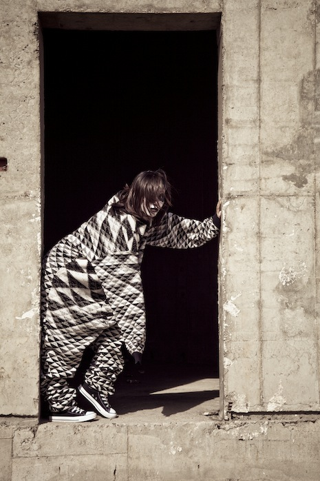
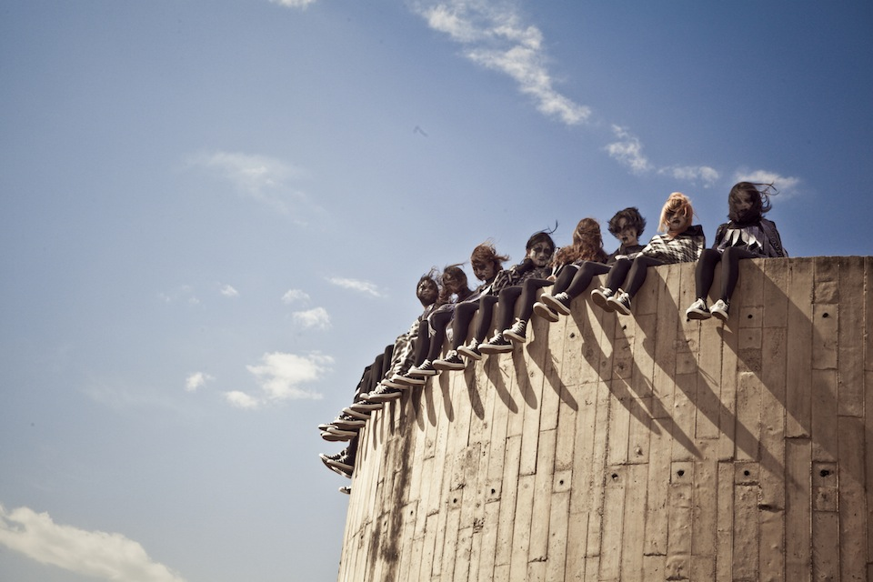
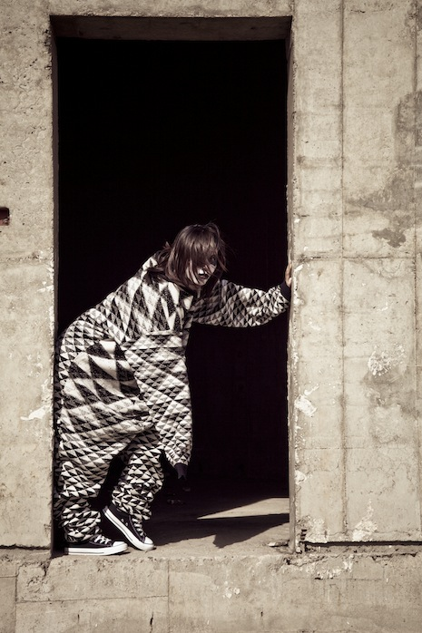
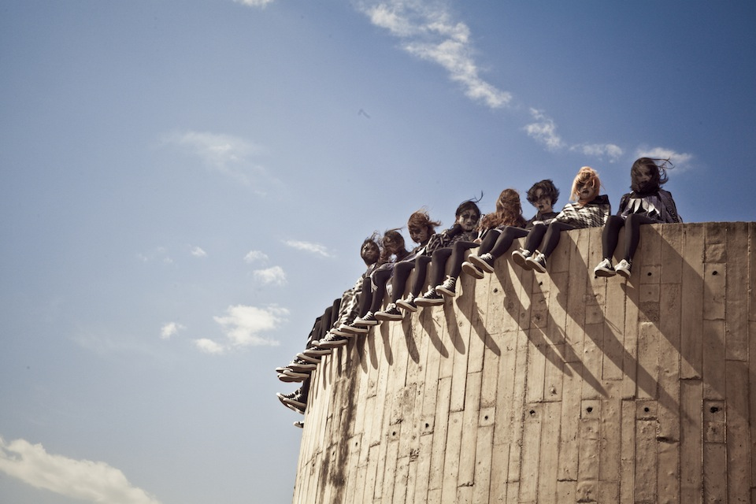
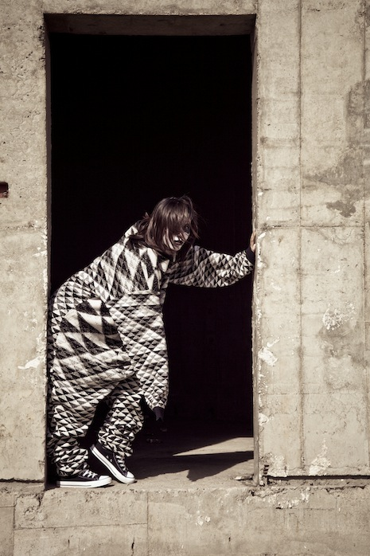

The Weird Tour of China, Part III: Castle of the Apocalypse
The Weird Tour of China's third episode 'Castle of the Apocalypse' was filmed in an abandoned fake Disneyland theme park an hour outside of Beijing. The Tour of China was sponsored by Converse China.
The abandoned theme park has huge relevance with regards to the Economic meltdown in Iceland. This overly ambitious construction, represents Iceland, falters half way through due to over reaching ambition. The theme park is very childlike and fantasy with projection of excess – an entertainment for hedonistic sake. The women in the piece are portrayed as post apocalyptic – the begrudged youth left to live in the ruins of greed.
- Concept and Direction: Kitty Von-Sometime
- Official Photographer: Madi Ju
- Editor: Gunnar B. Gudbjornsson
- Video Grading and Post Production: Michael Todd
- Photo grading: Einar Smárason
- Production Manager: Sally Shi
- Costumes: Tom Yong / Mundi
- Official Music: Feit by Sykur
- Friday 13 April 2012

 




